학부모 신뢰 증가
체계적인 학습 서포트 시스템이
갖춰져 있다는 하나의 증거
재등록, 이탈 방지
강의 다시보기 시스템을 통해 경쟁력 확보
쌓인 강의들은 강사 개인의 포트폴리오
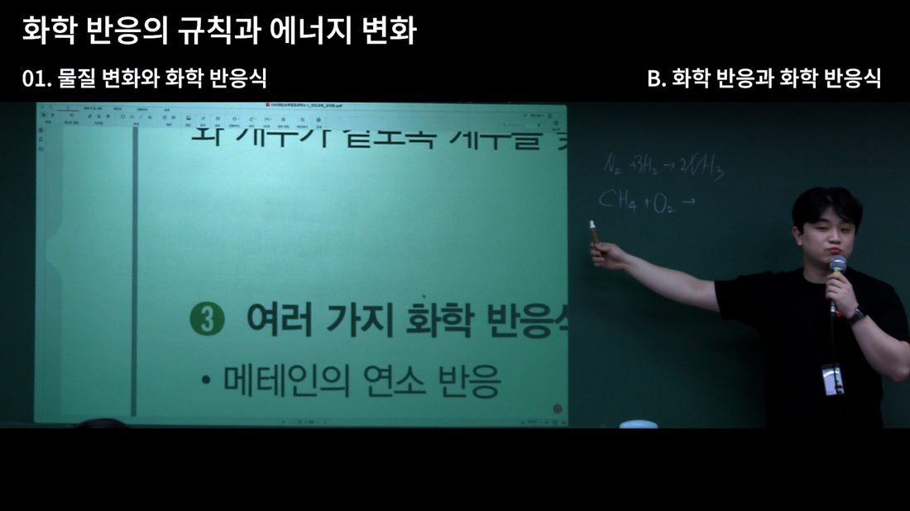
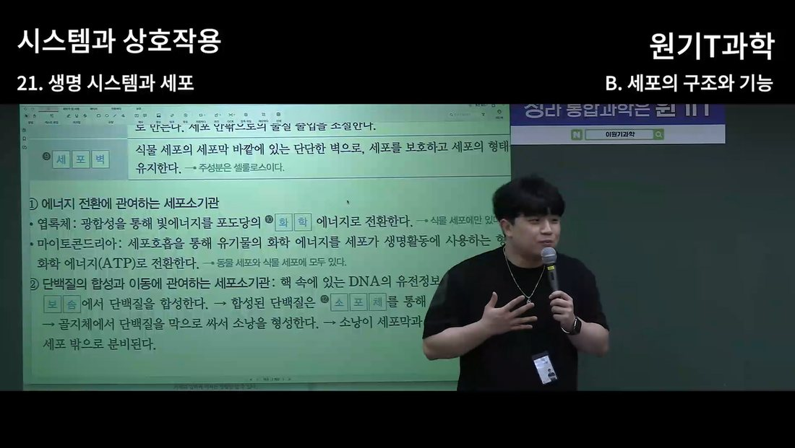
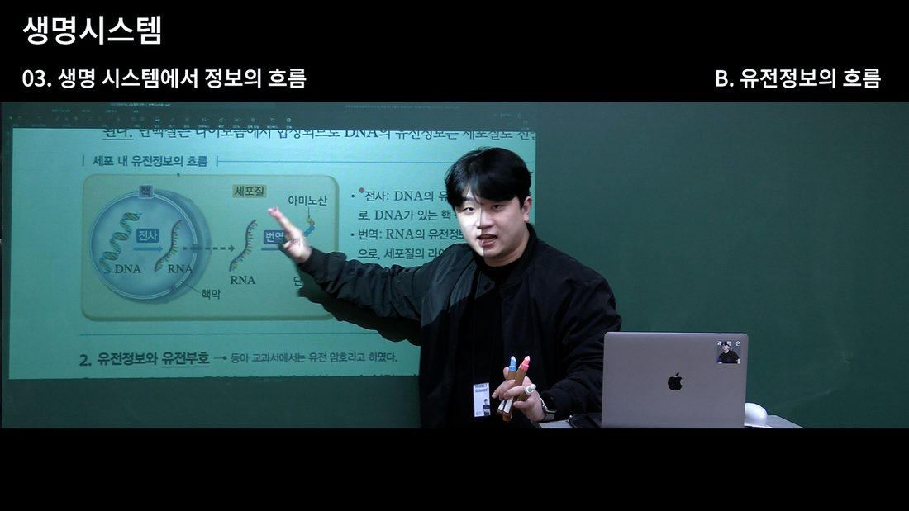
체계적인 학습 서포트 시스템이
갖춰져 있다는 하나의 증거
수업에 불참한 학생 관리와
동시에 망각 주기 공백 최소화
자습시간에 활용 가능하며
자기주도 학습 능력 향상
빠진 수업을, 다시 열지 않고 채웁니다
결석한 학생에게 필요한 건 그날의 수업입니다.
보강은 그 수업을 한 번 더 하는 일이고,
영상은 그날 것을 그대로 보내는 일입니다.
결석 학생이 생깁니다
보강 일정을 다시 잡습니다
학생·학부모와 시간을 맞춰야 합니다
같은 내용을 한 번 더 강의합니다
결석자가 또 생기면 1번부터 다시
같은 수업을 여러 번
그날 찍은 영상을 보냅니다
몇 명이 결석했든 보내는 일은 한 번입니다
추가 강의 0회
영상을 보는 건 결석한 학생만이 아닙니다
학원 강사 개인의 자료로 반영구적 사용 가능하며
다양한 방면으로 재활용됨
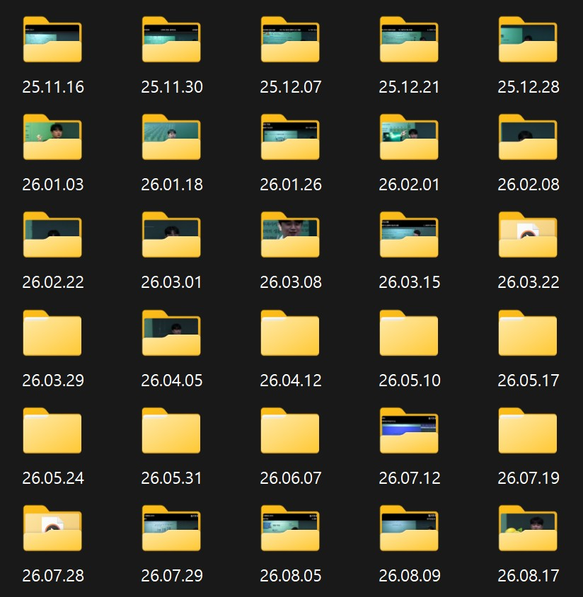
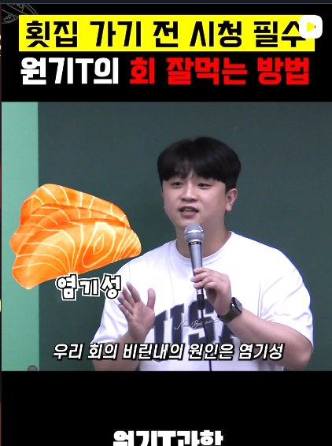
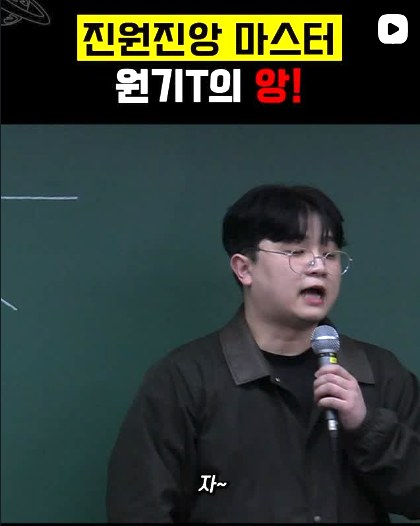
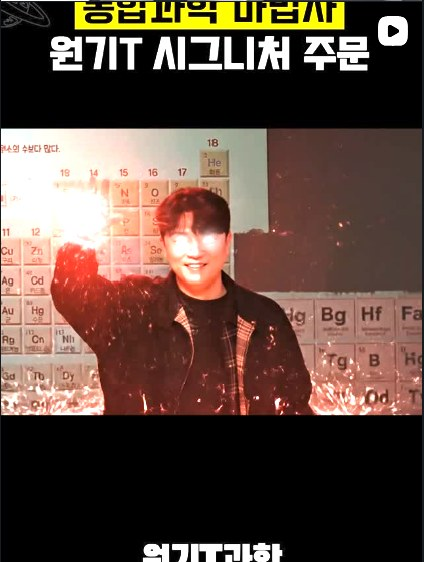
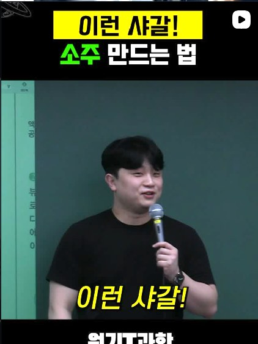
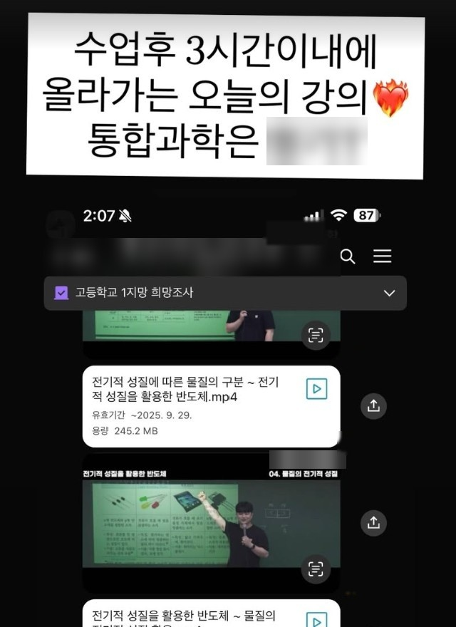
영상 제작하는 강사 개인별 하드디스크에
반영구적으로 보관하기 때문에 반영구적이며
강의에서 재미있는 부분은 쇼츠 혹은 릴스로
재가공하여 배포 가능합니다.
또한 영상 강의를 제공한다는 점에서
긍정적인 홍보 효과를 발생시킬 수 있습니다.
강사 개인별 영상 강의 제작 과정
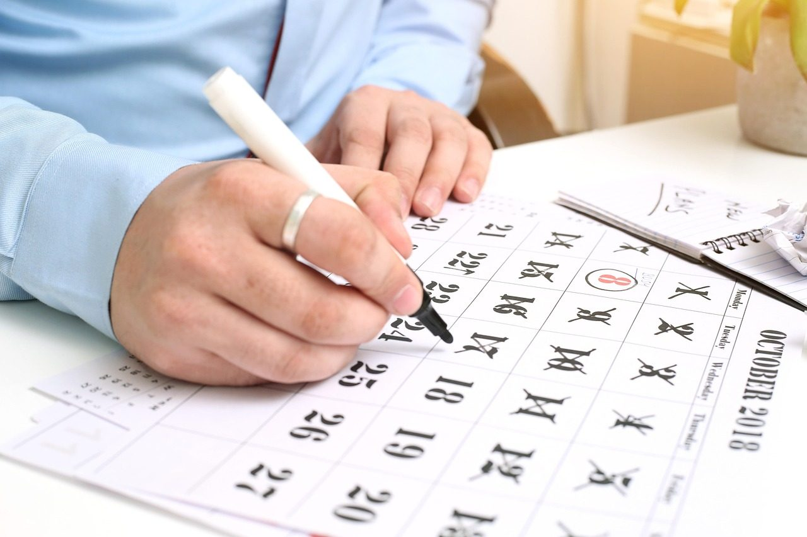
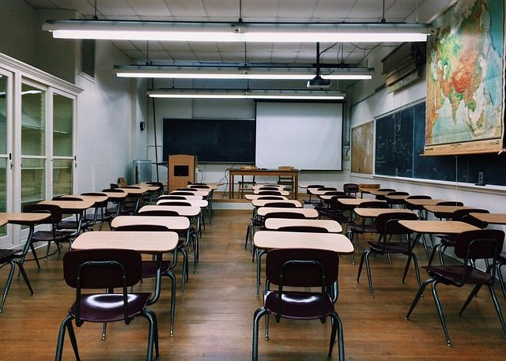
첫 촬영은 직접 촬영해드리지만
두 번째 촬영부터는 카메라 플레이 버튼만 눌러주시면 됩니다
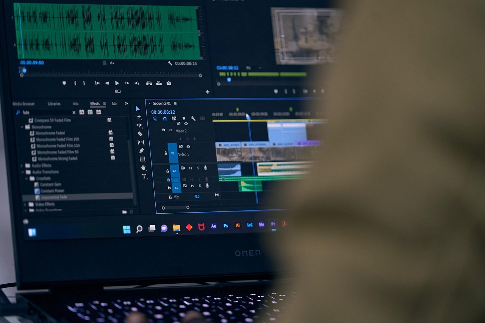
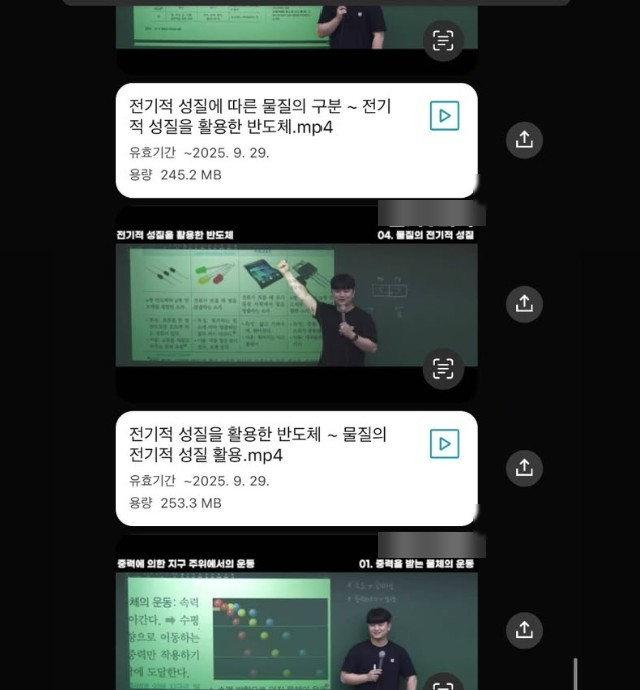
카카오톡방, 유튜브 등 개인이 원하는 방식으로 업로드 가능
영상 업로드 일정은 협의 후에 결정됩니다
최소 제작비를 위해 10편 이하 또한 기본 비용으로 산정합니다.
그 외
하드 양도 시 하드값 발생
단, 릴스만 수정 가능
강의 영상은 수정 불가능
궁금하실만한 사항들에 대해서 정리하였습니다.
첫 촬영은 직접 설치하고 직접 해드립니다. 두 번째 촬영부터는 장비를 대여해드리고 직접 촬영해주셔야 합니다. 인건비를 최소화 하기 위함입니다.
그렇습니다. 기본 촬영 분량은 최종영상 10개 분량 정도입니다.
하지만 기존에 예정된 분량에서 2~3개 정도 초과되는 것에 대해서는 초과 비용이 붙지 않습니다.
다만 예를 들어 1주일에 3개 학년 영상을 촬영한다고 가정했을 때 하루만 촬영을 했다고 금액이 적어지는 게 아니며 5일을 촬영을 하셨다고 하더라도 10~13개 정도의 최종 영상은 동일한 기본 가격으로 책정됩니다
기본적으로 기본 자막을 제공하지 않습니다. 영상 화질에 대해서는 4K 화질로 촬영되며 색보정, 명도 보정을 기본으로 합니다. 포트폴리오에 첨부된 동영상의 형태를 기본으로 합니다
아닙니다. 유튜브로 업로드 하면 링크를 가진 인원들에게만 보이도록 설정할 수 있습니다
개인사업자가 아니기 때문에 현금영수증 발행이 제한됩니다.
업계에서 통용되는 인터넷 강의의 형태는 추가 장비를 필요로 하기 때문에 제작이 어렵습니다.
강사 개인의 영상을 강의로 제작한다고 해서 성공적인 결과를 보장하기 어렵습니다.
다만, 그것을 어떻게 활용하고 개인의 강점으로 적용시키는가에 대한 문제라고 생각됩니다.
학원과 선생님 입장에서는 어필할 수 있는 하나의 요소가 되면서 동시에 퍼스널 브랜딩의 요소로 볼 수 있다고 판단됩니다.
인건비, 영상편집 프로그램 구독료, 절약할 수 있는 시간, 새로운 도전이라는 부분에서 개인의 가치 차이라고 생각합니다. 현재 저희팀은 시작하는 단계이기 때문에 최대한 저렴한 비용으로 제공할 수 있는 최선의 결과물을 전해드리기 위해 노력할 예정입니다.
영상 업로드 일정은 협의 후에 결정됩니다.
학원 영상강의 제작 서비스
정영찬PD